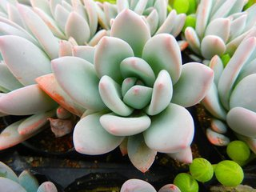

植物特点
1. 有叶的种类占相当大的比例。
2. 刺的特色没有仙人掌类那样鲜明，很多种类如虽有强刺但被叶掩盖，只是落叶期时刺才显得突出。
3. 花单生的也有，但有很大一部分是集成各种花序。花的观赏性总的来说逊于仙人掌类。 按贮水组织在植株中的不同部位，多肉植物可分为三大类型：叶多肉植物、茎多肉植物和茎干类多肉植物。 复叶的类型有三出叶、掌状复叶、一回羽状复叶和两回羽状复叶。
单叶的形状有线形、细圆柱形、匙形、椭圆形卵圆形、心形、剑形、舌形和菱形等。叶缘多为全缘，有的叶缘和叶尖有齿、毛或刺。少数种类叶顶端透明俗称窗。
4. 植株的肉质部分主要在茎基部或仅主茎肉质，形成极其膨大的形状不一的块状体、球状体或瓶状体。无节、无棱，而有疣状突起。
多肉展示
白牡丹
熊童子
- 
丽娜莲
爱染锦
花序
除了番杏科的种类是单生花外，其他各科基本上都以各种花序生在植株上。花序有顶生也有腋生，有时同一科的同一属植物也有顶生和腋生的区别，如景天科伽蓝菜属即如此。单生的花相对较大，而集成花序的花通常较小。多肉植物开花时会消耗许多养分。对于景天科和瓦苇属的多肉植物，如果不是有杂交育种的打算，尤其是在多肉本身状态并不好的情况下，可以直接用剪刀将花茎剪掉。
花序的种类很多，有头状花序（菊科）、穗状花序（胡椒科）、总状花序或圆锥花序（龙舌兰科）、伞形花序（萝藦科）、杯状聚伞花序（大朝属）、两歧聚伞花序（麻风树属）等。夹竹桃科、苦芭苔科、萝藦科、脂麻科和旋花科的花具较长的花筒，花瓣有联合也有分离，花的大小和形状各不相同。具体内容将在分类部分介绍。
生理特点
果实和种子
果实的种类有浆果、蒴果、核果、营英果和瘦果等。以萝荤科的管英果最具特色，而百合科芦荟属的三角形葫果很大，也很有趣。种子的大小和形状也因科属种类的不同而有很大差别。番杏科的种子非常细小，而风梨科、大朗科的种子较大。菊科的种子犹如一根针，而芦荟属的种子有圆盘状的翅，像草帽。相对而言，多肉植物采收种子比仙人掌类要困难一些，国外种子公司能提供的种远不及仙人掌类那样多。
植物粘液
很多种类体内有白色乳汁或无色的粘液，这是一种多糖物质。有的专家指出，它们的细胞内特别含有大量的五碳糖，提高了细胞液浓度，增强了抗旱抗逆性。同时这种粘液和乳汁在植物受伤时可使伤口迅速结膜，既防止了体内水分散失又避免了病菌感染。栽培中利用这一特点，可以将一些截面积很大的球形、柱形种切顶扦插。 它们的形态和表皮的一些结构使它们的蒸腾量大大减少。它们的表皮有很厚的角质层，很多种类表皮被蜡被毛。气孔数远较其他植物少而且深埋在表皮凹陷的坑内。角质层扩散阻力很大，因此，这类植物失水明显地比其他植物少。资料表明，一株玉米一天失水3～4升，而一株树木状的大仙人掌一天只失水25毫升。仙人掌科的最小品种松露玉是气孔最少的植物，可以在干旱季节形成一种近乎死亡的状态，各种生理活动近乎停滞。
代谢方式
仙人掌类和多肉植物在代谢方式上和一般植物有所不同。其特点是气孔白天关闭减少蒸腾，夜间开放吸收CO₂，而且在一定范围内，气 温越低，CO₂吸收越多。吸收的CO₂通过羧化形成苹果酸存于大液泡内，白天苹果酸脱羧放出CO₂进行光合作用，在一定的范围内，温度越高，脱羧越快。栽培上利用这个特点，即在一定范围内尽可能加大温室的昼夜温差，在晚上提高室内CO₂浓度等，可使这类植物加快生长。
渗透压
多肉植物的渗透压不高，一般在405.3～2026.5千帕（4～20大气压）之间，而超过1215。 9千帕（12大气压）的只有仙人掌屑植物。这个 数字远比在沙漠中存在的其他沙生植物低。因此在一些可溶性盐类很多的沙漠地区没有仙人掌类植物存在。这一点在栽培上很重要，施肥时决不能一次加入浓度很高的无机化肥，培养土中也不能混有过多的盐类物质，否则根部水分向外渗透而造成植株萎蔫。